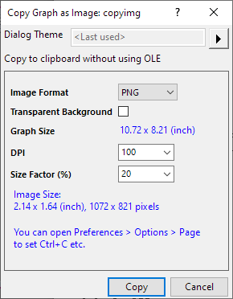

Diagramme in andere Anwendungen einfügen oder einbetten
Paste-Embed-OLE
Es gibt zwei Möglichkeiten, wie Sie Origin-Diagramme in andere Anwendungsdateien einbinden können -- als Bild oder durch Verwendung von OLE (Objektverknüpfung und Einbettung):
- Wenn Sie Ihr Origin-Diagramm als Bild einbinden möchten, kann es nicht mit Origin-Hilfsmitteln bearbeitet werden.
- Wenn Sie Ihr Diagramm mit Hilfe von OLE einbinden möchten, kann das Diagramm mit den Origin-Hilfsmitteln bearbeitet werden (Sie können generell ein Bild in einer Zielanwendung bearbeiten, wenn Sie deren Bildanwendungshilfsmittel verwenden, das ist aber nicht dasselbe). Wenn Sie Ihr Origin-Diagramm einbetten, enthält die Zieldatei eine Kopie des Diagrammobjekts.
Wenn Sie Ihr Diagramm in einer Zieldatei als OLE-Objekt einbinden, agiert Origin als OLE-Server.
Diagramm als Bild kopieren/einfügen
Kopieren Sie das Diagramm in die Zwischenablage ohne Verwendung von OLE. Das Diagramm wird dann als Bild in andere Anwendungen eingefügt.
- Klicken Sie auf die Schaltfläche Diagramm als Bild kopieren
 auf der Minisymbolleiste des Diagramms.
auf der Minisymbolleiste des Diagramms.
oder
Wählen Sie Bearbeiten: Diagramm als Bild kopieren im Menü.
oder
Klicken Sie mit der rechten Maustaste auf das Diagramm und wählen Sie im Kontextmenü Kopieren: Diagramm als Bild kopieren.
oder
Aktivieren Sie das Diagrammfenster und drücken Sie Strg + Alt + J.
- Im Dialog Diagramm als Bild kopieren können Sie das Bildformat benutzerdefiniert anpassen (PNG, EMF, DIB, HTML und JPEG). Klicken Sie dann auf die Schaltfläche Kopieren.
- 
- Drücken Sie in der Zielanwendung (wie Microsoft® Word) die Tasten Strg + V oder klicken Sie auf die Schaltfläche Einfügen.
Hinweis: Exakt das gleiche Ergebnis wird durch folgende Methode erzielt:- Strg + C (Origin) => Strg + V (MS Word).
Sie können Einstellungen > Optionen > Seite öffnen, um Strg + C zum Kopieren von OLE festzulegen.
|
Diagramm in eine andere Anwendung einbetten
Sie können Origin-Diagramme mit OLE-kompatiblen Anwendungen durch Einbetten Ihrer Diagramme teilen. Wenn Sie die Diagramme in anderen Anwendungen einbetten, können Sie die Diagramme mit Hilfe von Origins Hilfsmittel bearbeiten.
Bitte bedenken Sie, wenn Sie Ihr Diagramm in anderen Anwendungsdateien einbetten, werden die Daten in der Zieldatei gespeichert -- nicht in der Origin-Datei. Ein nachträgliches Bearbeiten des Diagramms kann mit einem Doppelklick auf das Diagramm in der Zieldatei ausgeführt werden. Hauptvorteil: Dies erstellt eine einzelne eigenständige Datei.
Diagramme einbetten
Origin liefert Ihnen drei Methoden, Ihr Diagramm in eine OLE-kompatible Datei einzubetten.
Das Diagramm muss nicht in einem Diagrammfenster (*.OGG(U)) oder in einer Projektdatei (*.OPJ(U)) gespeichert werden. (Die Inhalte der aktuellen Origin-Sitzung müssen nicht gespeichert werden.)
- In Origin wählen Sie Bearbeiten: Seite kopieren.
- In der Zielanwendung (wie z.B. Microsoft® Word) wählen Sie Bearbeiten: Inhalte einfügen. In Word öffnet dieser Menübefehl den Dialog Inhalte einfügen.
- Wählen Sie Origin-Diagrammobjekt aus der Liste Einfügen als aus.
- Klicken Sie auf die Option Einfügen.
- Klicken Sie auf OK.
Ihr Diagramm wird in der Zielanwendung als Objekt angezeigt.
 | Origin 2018 führte die neuen Unicode-kompatiblen Dateitypen ein, einschließlich denen für das Origin-Projekt (OPJU) und für das Origin-Diagramm (OGGU). Wenn Sie Origin 2018 oder höher verwenden, um ein Origin-Diagramm in ein Word-Dokument einzubetten, und das Dokument dann einem Kollegen geben, der Origin 2017 oder älter verwendet, kann er bzw. sie das Origin-Diagramm nicht bearbeiten. Lesen Sie Einzelheiten in dieser FAQ. |
| Wenn Sie eine Diagrammseite aus einer vorhandenen OPJU-Datei kopieren und dann in eine Anwendung von MS Office einfügen, z. B. Word, PPT etc., gibt es eine Option Link einfügen im Dialog Inhalte einfügen, um das Origin-Diagramm als Link einzufügen und damit Speicher im MS-Dokument zu sparen. Dies funktioniert allerdings nicht gut mit den neuen MS-Dokumentformaten (docx, pptx etc.). Beim Laden dieser MS-Dokumente und dem Doppelklick auf das Origin-Diagramm werden mehreren Instanzen von Origin im Hintergrund gestartet und verursachen eine Verringerung der Geschwindigkeit. Das Schließen des Dokuments schließt diese verborgenen Origin-Sitzungen auch nicht. Dieses Problem besteht nicht bei MS-Dokumenten, die im alten Format (doc, ppt etc.) gespeichert sind. |
Das Diagramm muss schon als Diagrammfenster (*.OGG(U)) gespeichert worden sein.
- Wählen Sie in der Zielanwendung (wie Word) Einfügen: Objekt. In Word öffnet dieser Menübefehl den Dialog Objekt.
- Wählen Sie die Registerkarte Aus Datei erstellen.
- Klicken Sie auf Durchsuchen. Hierdurch öffnet sich der Dialog Durchsuchen.
- Wählen Sie die gewünschte *.OGG(U)-Datei aus.
- Klicken Sie auf OK.
- Stellen Sie sicher, dass im Dialog Objekt das Kontrollkästchen Verknüpfen deaktiviert ist.
- Klicken Sie auf OK.
Ihr Diagramm wird in der Zielanwendung als Objekt angezeigt.
- Wählen Sie in der Zielanwendung (wie Word) Einfügen: Objekt. In Word öffnet dieser Menübefehl den Dialog Objekt.
- Wählen Sie die Registerkarte Neu erstellen.
- Wählen Sie Origin-Diagramm aus der Liste Objekttyp aus.
- Klicken Sie auf OK. Hierdurch öffnet sich eine neue Origin-Einheit, die ein Diagramm im Dokumentn-Fenster anzeigt.
- Aktivieren Sie diese neue Origin-Einheit.
- Erstellen Sie Ihr Diagramm (in der neuen Programmeinheit).
- Bei aktivem Diagrammfenster wählen Sie Datei: Dokumentn aktualisieren.
- Wählen Sie Datei:Beenden und Zurückkehren zu Documentn. Dieser Menübefehl schließt die neue Origin-Einheit und aktiviert die Zielanwendung (in diesem Fall Word) wieder.
Eingebettetes Diagramm bearbeiten
Wenn das Origin-Objekt in einer OLE-kompatiblen Datei eingebettet ist, ist es mit den Hilfsmitteln von Origin bearbeitungsfähig.
- Das eingebettete Objekt in Origin bearbeiten:
- Klicken Sie doppelt auf das eingefügte Diagramm.
- Hierdurch wird eine Origin-Einheit geöffnet; das Diagrammfenster wird im Arbeitsbereich angezeigt und steht für die Bearbeitung zur Verfügung.
- Änderungen an einem Diagramm vornehmen
- Um das eingebettete Objekt zu aktualisieren:
- Wählen Sie Datei: Zielanwendung aktualisieren.
- Um diese Origin-Einheit zu schließen und zur Zielanwendung zurückzukehren:
- Wählen Sie Datei: Beenden und Zurückkehren zu Zielanwendung.
- Um das eingebettete Diagramm per Vor-Ort-Aktivierung zu bearbeiten:
Alternativ hierzu können Origin-Objekte, die in eine Zieldatei eingefügt wurden, ohne Verlassen der Zielanwendung bearbeitet werden. Diese Bearbeitungsmethode funktioniert durch Vor-Ort-Aktivierung einer Teilmenge der Hilfsmittel um Bearbeiten von Origin-Diagrammen.
Um die Vor-Ort-Aktivierung einzuschalten:
- Wählen Sie im Origin-Menü Einstellungen: Optionen und dort die Registerkarte Grafik.
- Aktivieren Sie das Kontrollkästchen OLE an Ort und Stelle aktivieren.
- Klicken Sie auf OK, um den Dialog zu schließen (Sie erhalten die Nachfrage Als Origin Startup-Optionen speichern?).
- Sie können Origin nun schließen.
- Um das Diagramm per Vor-Ort-Aktivierung zu bearbeiten:
- Klicken Sie doppelt auf das eingefügte (nicht verknüpfte) Origin-Diagramm in der Zielanwendung. Das Diagramm von Origin ist fertig zum Bearbeiten, nachdem Sie rechts auf das gewählte Objekt geklickt und aus den verschiedenen Origin-Kontextmenübefehlen ausgewählt haben.
| Hinweis: Die Vor-Ort-Aktivierung zur Bearbeitung eingefügter Origin-Diagramme ist im Allgemeinen nicht zu empfehlen; Sie haben hier keinen Zugang zu vielen nützlichen Origin-Funktionen - z.B. den Arbeitsmappenfenstern, die die im Diagramm gezeichneten Daten enthalten. |